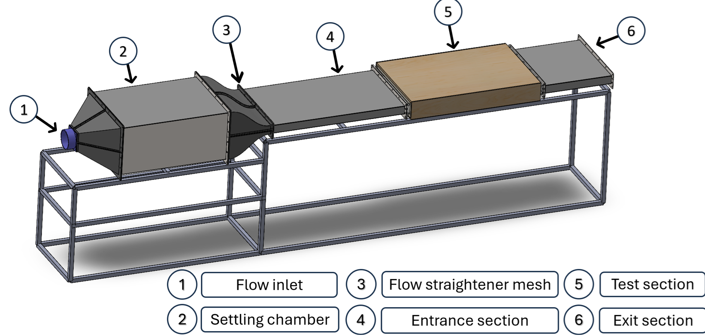
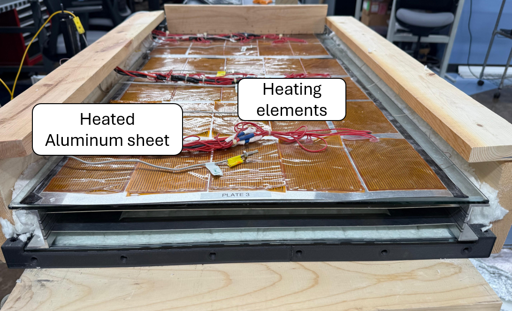
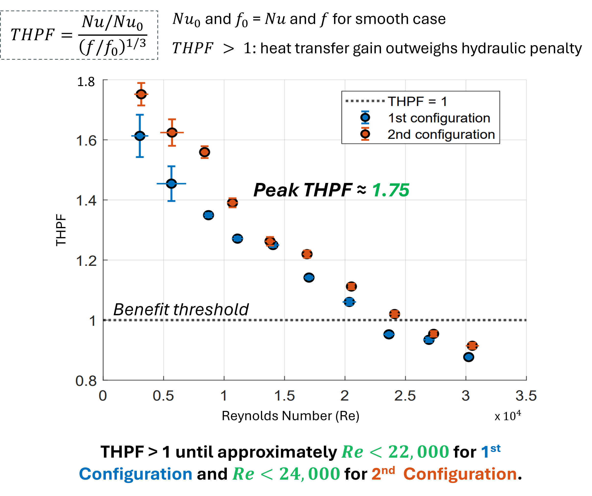

Evaluated the thermo-hydraulic trade-offs of passive boundary-layer disruption in forced-convection air channels using louvered-sheet inserts. Tested across Reynolds numbers spanning 3,000 to 30,000 to determine whether convective gains (Nusselt number, Nu) outweigh parasitic aerodynamic pumping power (friction factor, f).
Configuration 2 (louvered sheets placed at 1/4 and 3/4 duct heights) sustained superior mixing and thermal-hydraulic performance factors (THPF > 1) up to Re ≈ 24,000, achieving an optimal operational balance compared to tighter core placements.


